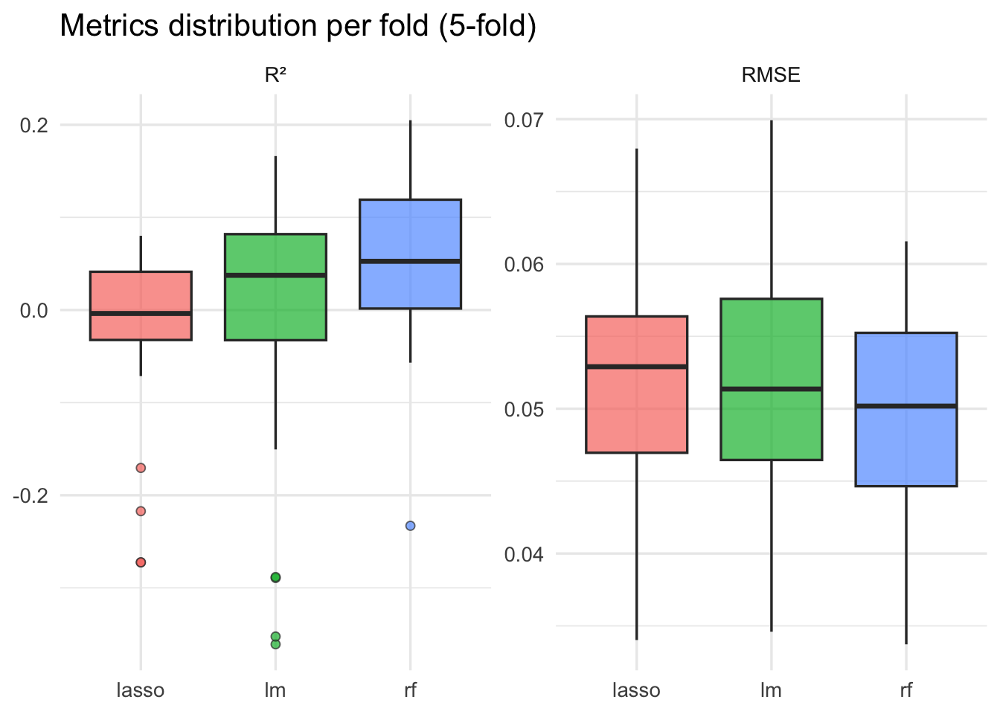
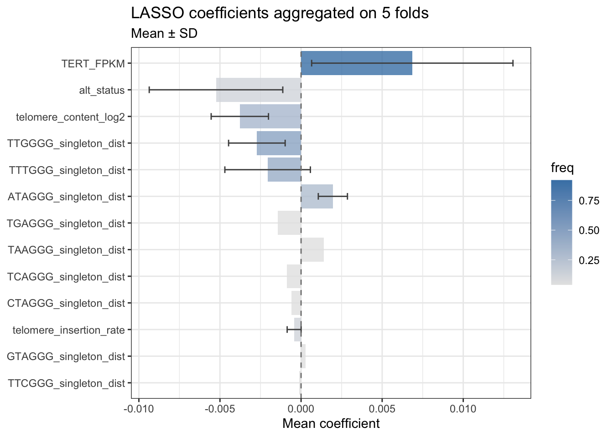
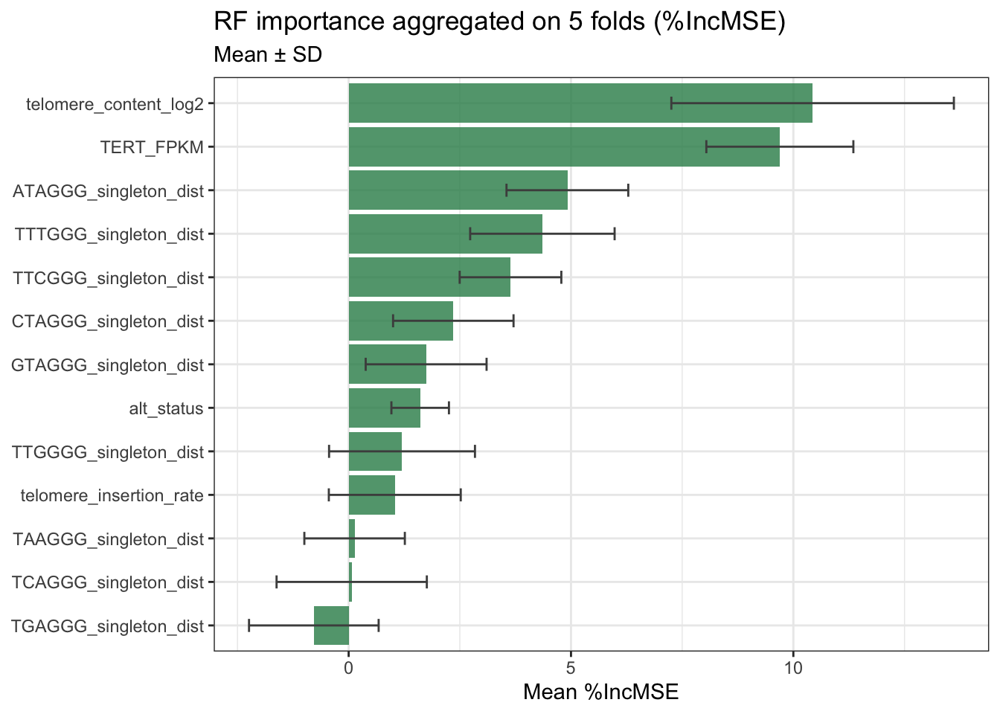
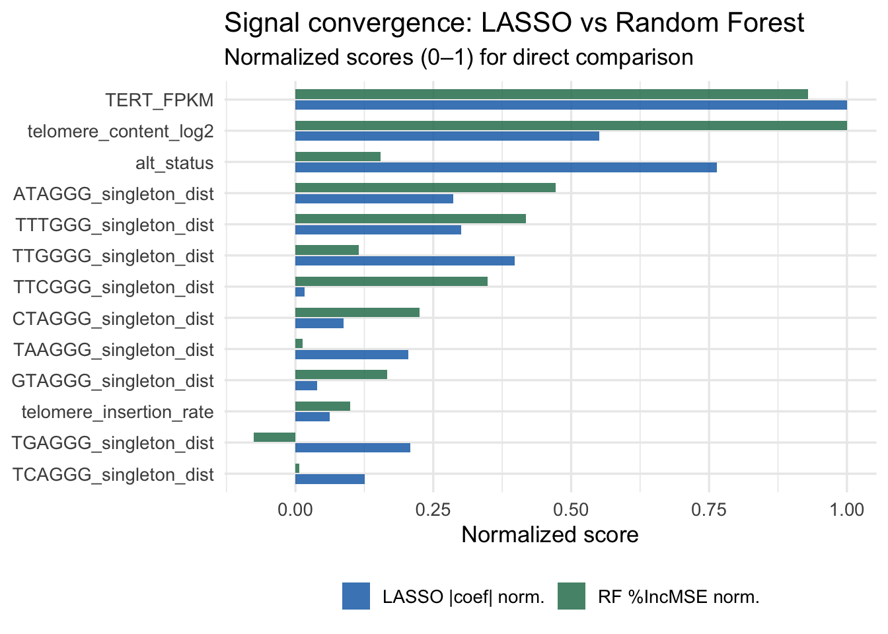
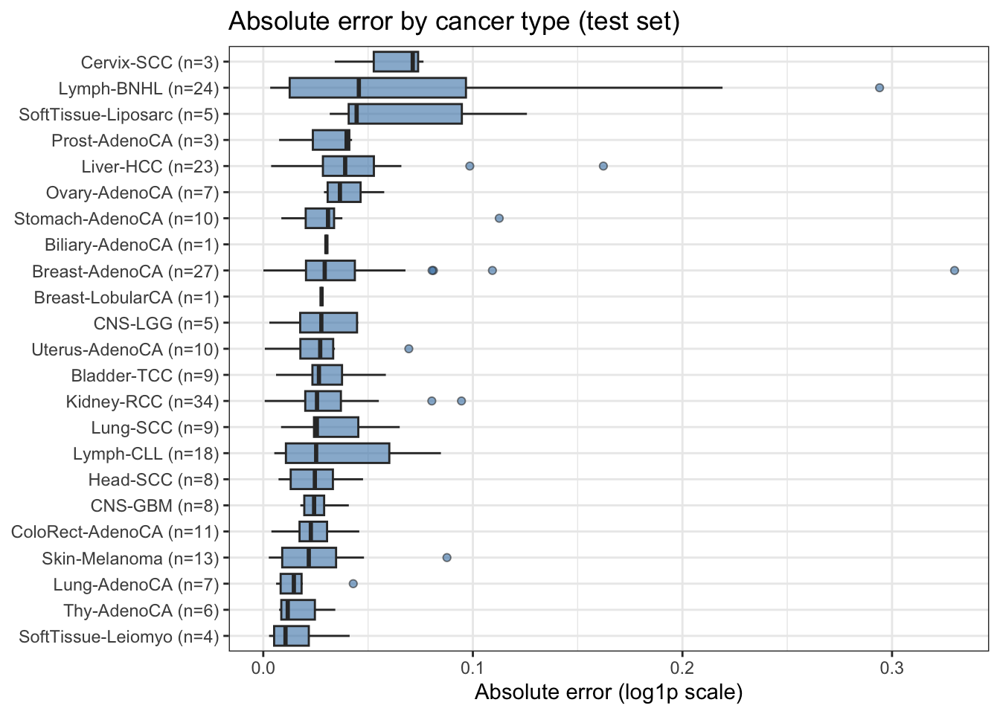
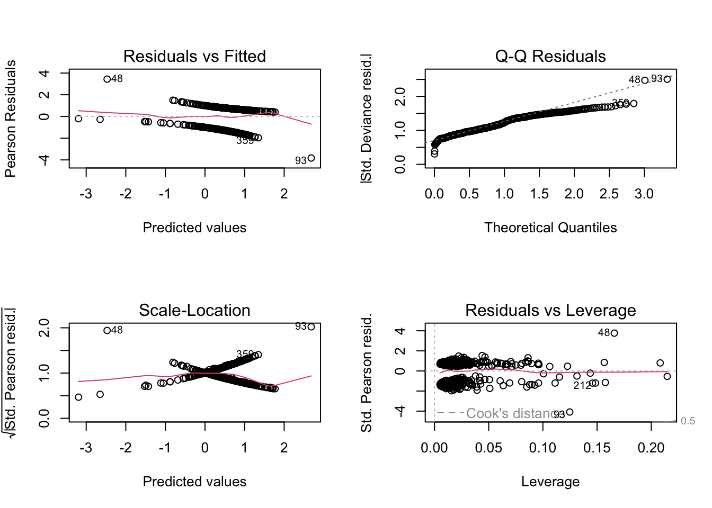
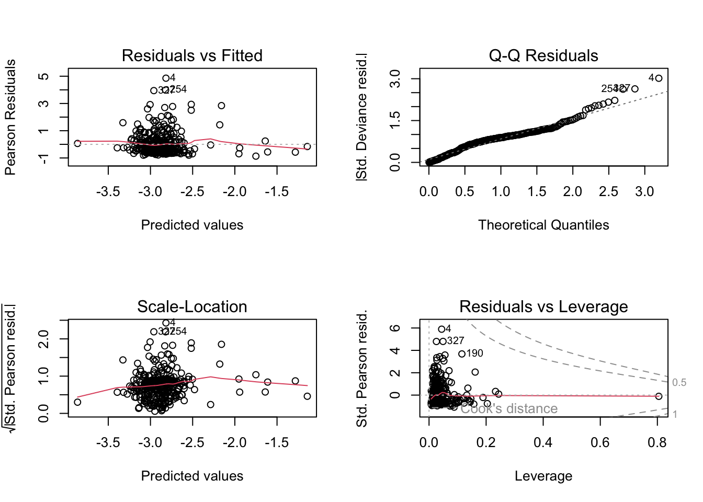
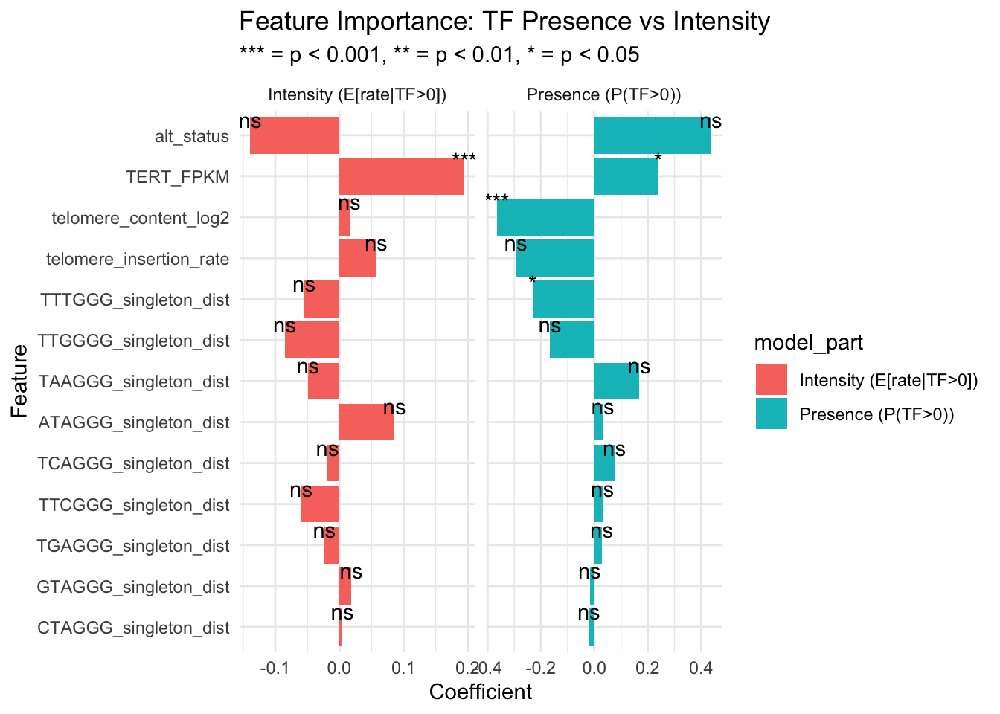

# A tibble: 3 × 5
model rmse_mean rmse_sd r2_mean r2_sd
<chr> <dbl> <dbl> <dbl> <dbl>
1 rf 0.0500 0.00724 0.0565 0.0960
2 lm 0.0519 0.00817 -0.0182 0.152
3 lasso 0.0524 0.00791 -0.0309 0.098415_bTF_regression_primary
Setup
Since we are in a regression task, it is better to have a distribution for our response variable as symmetric as possible. We know it is currently strongly skewed, thus we can apply a log1p transformation to deal with its asymmetry and its zero values. We can do the same also for similarly distributed features, such as telomere insertion.
We also drop unwanted columns and recode alt_status as 0 (ALT-low) and 1 (ALT-high).
Split the dataset
We split the dataset with a 70/30 split in training set and test set. We won’t touch the latter until final performance estimation, to avoid data leakage.
Metrics functions
We define functions to help us in the evaluation of the performances of the models. In particular we will use RMSE and R squared.
Manual Cross-Validation
We use a 5-fold cross-validation on the training set. We do it manually to have to possibility to further extend to other metrics, methods, or whatever.
CV results
Averages and standard deviations on 5 folds.

Feature importance : LASSO
For each feature we register in how many folds is has been selected from Lasso and the mean/SD of the coefficient. A feature selected in all folds with a stable coefficient should be a strong enough signal. Otherwise, rarely selected features or unstable coefficients must be interpreted carefully.
# A tibble: 13 × 5
feature n_selected freq coef_mean coef_sd
<chr> <int> <dbl> <dbl> <dbl>
1 TERT_FPKM 23 0.92 0.00686 0.00621
2 TTGGGG_singleton_dist 12 0.48 -0.00272 0.00174
3 TTTGGG_singleton_dist 10 0.4 -0.00206 0.00264
4 telomere_content_log2 8 0.32 -0.00378 0.00177
5 ATAGGG_singleton_dist 7 0.28 0.00196 0.000899
6 alt_status 3 0.12 -0.00524 0.00412
7 telomere_insertion_rate 3 0.12 -0.000427 0.000430
8 TGAGGG_singleton_dist 1 0.04 -0.00143 NA
9 TAAGGG_singleton_dist 1 0.04 0.00141 NA
10 TCAGGG_singleton_dist 1 0.04 -0.000860 NA
11 CTAGGG_singleton_dist 1 0.04 -0.000599 NA
12 GTAGGG_singleton_dist 1 0.04 0.000269 NA
13 TTCGGG_singleton_dist 1 0.04 -0.000117 NA 
Feature importance: Random Forest
# A tibble: 13 × 3
feature inc_mse_mean inc_mse_sd
<chr> <dbl> <dbl>
1 telomere_content_log2 10.4 3.18
2 TERT_FPKM 9.70 1.65
3 ATAGGG_singleton_dist 4.92 1.37
4 TTTGGG_singleton_dist 4.36 1.62
5 TTCGGG_singleton_dist 3.64 1.14
6 CTAGGG_singleton_dist 2.35 1.35
7 GTAGGG_singleton_dist 1.74 1.36
8 alt_status 1.61 0.647
9 TTGGGG_singleton_dist 1.20 1.64
10 telomere_insertion_rate 1.04 1.48
11 TAAGGG_singleton_dist 0.133 1.13
12 TCAGGG_singleton_dist 0.0685 1.69
13 TGAGGG_singleton_dist -0.783 1.46 
Comparison LASSO vs RF: do they agree?

Final evaluation on test set
Let’s fit each model on the whole training set and evaluate on the test set.
# A tibble: 3 × 3
model rmse r2
<chr> <dbl> <dbl>
1 LASSO 0.0526 -0.0253
2 LM 0.0534 -0.0548
3 Random Forest 0.0545 -0.0995Quantification of the residuals
Beware that these results are in log1p scale!
# A tibble: 246 × 6
true pred error abs_error perc_error cancer_type
<dbl> <dbl> <dbl> <dbl> <chr> <chr>
1 0 0.0408 0.0408 0.0408 Inf% CNS-GBM
2 0.0238 0.0415 0.0176 0.0176 73.9% CNS-LGG
3 0.0286 0.0315 0.00291 0.00291 10.1% CNS-LGG
4 0 0.0317 0.0317 0.0317 Inf% SoftTissue-Liposarc
5 0 0.0414 0.0414 0.0414 Inf% Liver-HCC
6 0.0203 0.0299 0.00960 0.00960 47.2% Lung-AdenoCA
7 0.0265 0.0345 0.00801 0.00801 30.2% Liver-HCC
8 0.365 0.0710 -0.294 0.294 -80.6% Lymph-BNHL
9 0.0263 0.0403 0.0139 0.0139 52.9% Kidney-RCC
10 0.208 0.0194 -0.189 0.189 -90.7% Lymph-BNHL
11 0.167 0.100 -0.0667 0.0667 -40% Lymph-BNHL
12 0 0.0408 0.0408 0.0408 Inf% SoftTissue-Liposarc
13 0.0844 0.134 0.0491 0.0491 58.1% Lymph-BNHL
14 0.0544 0.0604 0.00598 0.00598 11% SoftTissue-Leiomyo
15 0 0.126 0.126 0.126 Inf% SoftTissue-Liposarc
16 0.0257 0.0330 0.00728 0.00728 28.3% Head-SCC
17 0.0734 0.0433 -0.0301 0.0301 -41% Biliary-AdenoCA
18 0.162 0.0469 -0.115 0.115 -71% Lymph-BNHL
19 0.0753 0.0274 -0.0479 0.0479 -63.6% Kidney-RCC
20 0 0.0309 0.0309 0.0309 Inf% Breast-AdenoCA
21 0.0246 0.0390 0.0144 0.0144 58.8% Lymph-BNHL
22 0.0257 0.0669 0.0412 0.0412 160.2% SoftTissue-Leiomyo
23 0.0580 0.0607 0.00277 0.00277 4.8% SoftTissue-Leiomyo
24 0.0317 0.0543 0.0226 0.0226 71.4% ColoRect-AdenoCA
25 0 0.0306 0.0306 0.0306 Inf% Liver-HCC
26 0.110 0.0300 -0.0804 0.0804 -72.8% Kidney-RCC
27 0.0176 0.0261 0.00849 0.00849 48.3% Lung-SCC
28 0 0.0528 0.0528 0.0528 Inf% Lymph-BNHL
29 0 0.0242 0.0242 0.0242 Inf% Lung-SCC
30 0.0500 0.0373 -0.0128 0.0128 -25.5% Lymph-BNHL
31 0.0489 0.0234 -0.0256 0.0256 -52.2% Lymph-BNHL
32 0.0757 0.0205 -0.0551 0.0551 -72.9% Kidney-RCC
33 0.0822 0.0171 -0.0651 0.0651 -79.2% Lung-SCC
34 0.116 0.0216 -0.0946 0.0946 -81.4% Kidney-RCC
35 0.0211 0.0275 0.00646 0.00646 30.6% Lymph-BNHL
36 0.0335 0.0201 -0.0134 0.0134 -40% Breast-AdenoCA
37 0 0.0428 0.0428 0.0428 Inf% Breast-AdenoCA
38 0.101 0.0867 -0.0146 0.0146 -14.4% Lymph-BNHL
39 0.123 0.0379 -0.0848 0.0848 -69.1% Lymph-CLL
40 0.0451 0.0375 -0.00758 0.00758 -16.8% Thy-AdenoCA
41 0 0.0455 0.0455 0.0455 Inf% ColoRect-AdenoCA
42 0.0263 0.0255 -0.000746 0.000746 -2.8% Uterus-AdenoCA
43 0.0555 0.0253 -0.0303 0.0303 -54.5% Head-SCC
44 0.116 0.0350 -0.0805 0.0805 -69.7% Lymph-CLL
45 0 0.0577 0.0577 0.0577 Inf% Ovary-AdenoCA
46 0 0.0286 0.0286 0.0286 Inf% ColoRect-AdenoCA
47 0.0631 0.0265 -0.0366 0.0366 -57.9% Ovary-AdenoCA
48 0 0.0381 0.0381 0.0381 Inf% Breast-AdenoCA
49 0 0.0445 0.0445 0.0445 Inf% SoftTissue-Liposarc
50 0.0570 0.0372 -0.0198 0.0198 -34.7% Lymph-CLL
# ℹ 196 more rows# A tibble: 1 × 6
mean_error sd_error mae median_ae max_ae rmse
<dbl> <dbl> <dbl> <dbl> <dbl> <dbl>
1 0.000391 0.0546 0.0374 0.0283 0.330 0.0545
Two-part model
Call:
glm(formula = I(tf_blood_rate > 0) ~ ., family = binomial(link = "logit"),
data = train_s)
Coefficients:
Estimate Std. Error z value Pr(>|z|)
(Intercept) 0.50487 0.09667 5.222 1.77e-07 ***
alt_status 0.43691 0.58752 0.744 0.457086
telomere_insertion_rate -0.29422 0.17858 -1.648 0.099439 .
telomere_content_log2 -0.36543 0.10122 -3.610 0.000306 ***
TERT_FPKM 0.23948 0.11729 2.042 0.041170 *
ATAGGG_singleton_dist 0.03187 0.09419 0.338 0.735103
CTAGGG_singleton_dist -0.02002 0.10467 -0.191 0.848302
GTAGGG_singleton_dist -0.01723 0.10018 -0.172 0.863480
TAAGGG_singleton_dist 0.16833 0.09753 1.726 0.084370 .
TCAGGG_singleton_dist 0.07541 0.10879 0.693 0.488225
TGAGGG_singleton_dist 0.02813 0.10726 0.262 0.793120
TTCGGG_singleton_dist 0.03081 0.12196 0.253 0.800581
TTGGGG_singleton_dist -0.16574 0.10418 -1.591 0.111629
TTTGGG_singleton_dist -0.23029 0.10276 -2.241 0.025031 *
---
Signif. codes: 0 '***' 0.001 '**' 0.01 '*' 0.05 '.' 0.1 ' ' 1
(Dispersion parameter for binomial family taken to be 1)
Null deviance: 755.38 on 570 degrees of freedom
Residual deviance: 722.80 on 557 degrees of freedom
AIC: 750.8
Number of Fisher Scoring iterations: 4
Call:
glm(formula = tf_blood_rate ~ ., family = Gamma(link = "log"),
data = df_positive)
Coefficients:
Estimate Std. Error t value Pr(>|t|)
(Intercept) -2.87201 0.04867 -59.007 < 2e-16 ***
alt_status -0.13928 0.26007 -0.536 0.5926
telomere_insertion_rate 0.05724 0.08884 0.644 0.5198
telomere_content_log2 0.01541 0.05407 0.285 0.7758
TERT_FPKM 0.19490 0.04886 3.989 8.13e-05 ***
ATAGGG_singleton_dist 0.08613 0.04843 1.778 0.0762 .
CTAGGG_singleton_dist 0.00465 0.05245 0.089 0.9294
GTAGGG_singleton_dist 0.01866 0.05066 0.368 0.7128
TAAGGG_singleton_dist -0.04895 0.04884 -1.002 0.3169
TCAGGG_singleton_dist -0.01827 0.05824 -0.314 0.7539
TGAGGG_singleton_dist -0.02349 0.05646 -0.416 0.6777
TTCGGG_singleton_dist -0.05971 0.05971 -1.000 0.3180
TTGGGG_singleton_dist -0.08520 0.05210 -1.635 0.1029
TTTGGG_singleton_dist -0.05511 0.05324 -1.035 0.3013
---
Signif. codes: 0 '***' 0.001 '**' 0.01 '*' 0.05 '.' 0.1 ' ' 1
(Dispersion parameter for Gamma family taken to be 0.7103061)
Null deviance: 202.12 on 356 degrees of freedom
Residual deviance: 176.33 on 343 degrees of freedom
AIC: -1407.5
Number of Fisher Scoring iterations: 12


# A tibble: 13 × 3
term avg_abs_coef n_sig
<chr> <dbl> <int>
1 alt_status 0.288 0
2 TERT_FPKM 0.217 2
3 telomere_content_log2 0.190 1
4 telomere_insertion_rate 0.176 0
5 TTTGGG_singleton_dist 0.143 1
6 TTGGGG_singleton_dist 0.125 0
7 TAAGGG_singleton_dist 0.109 0
8 ATAGGG_singleton_dist 0.0590 0
9 TCAGGG_singleton_dist 0.0468 0
10 TTCGGG_singleton_dist 0.0453 0
11 TGAGGG_singleton_dist 0.0258 0
12 GTAGGG_singleton_dist 0.0179 0
13 CTAGGG_singleton_dist 0.0123 0